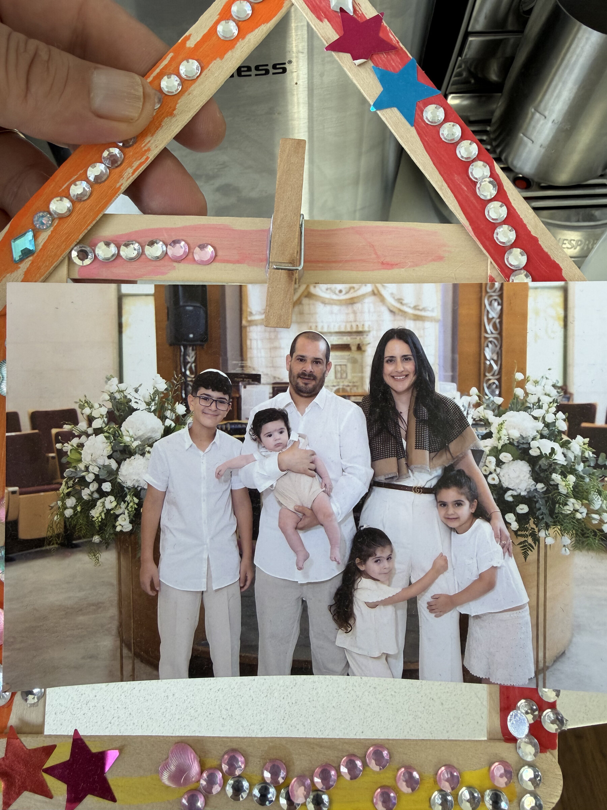
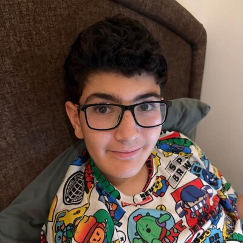
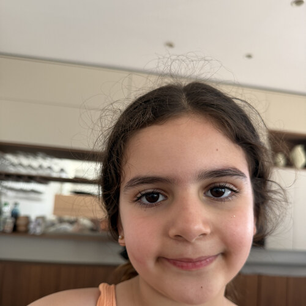
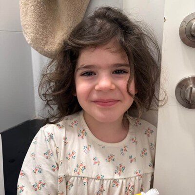
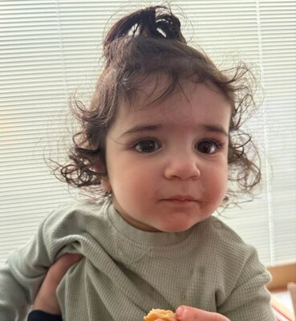

טיולים וחוויות
מקומות שראינו, דרכים שעברנו ורגעים שפתאום הפכו לזיכרון.

הסיפורים, הרגעים והזיכרונות שלנו
ברוכים הבאים למקום הקטן שלנו — שבו נאספים רגעים, סיפורים וזיכרונות משפחתיים שנרצה לשמור, לשתף ולחזור אליהם גם בעוד שנים.
לגלות את הסיפור שלנומשפחת חוגג היא עולם של רגעים קטנים וגדולים — סיפורים שנוצרים בבית, בדרכים, בחגים, בטיולים ובימים הכי רגילים. האתר הזה נולד כדי לתת לכל אלה מקום: לשמור זיכרונות, לחזור אליהם, ולשתף אותם עם האנשים הקרובים אלינו.
כאן נאסוף בהדרגה תמונות, סיפורים, אבני דרך ורגעים משפחתיים — לא כאלבום סגור במדף, אלא כמקום חי שמתעדכן וגדל יחד איתנו.
יש רגעים שעוברים מהר, אבל נשארים איתנו הרבה אחרי. כאן נאסוף את החוויות, התמונות והסיפורים הקטנים שמרכיבים את הסיפור שלנו.
מקומות שראינו, דרכים שעברנו ורגעים שפתאום הפכו לזיכרון.
מפגשים, שמחות, מסורות ורגעים שחוזרים בכל שנה בצורה חדשה.
התחלות חדשות, גדילה, התרגשות וסימנים קטנים של זמן שעובר.
הימים הפשוטים, הצחוקים, השיחות והרגעים שהופכים את הבית למה שהוא.
כל משפחה היא הסיפורים של האנשים שמרכיבים אותה. אלה האנשים שלנו — כל אחד עם האור, האופי והדרך שלו.
אבא
יוצר רגעים, סיפורים וחלומות למשפחה.
אמא
הלב החם שמחזיק את הבית והמשפחה יחד.

בן
עולם של סקרנות, אנרגיה ודמיון.

בת
שמחה, אור ורגעים קטנים שהופכים לגדולים.

בת
קסם, רכות וסיפור שהולך ונכתב כל יום.

בן
נוכחות קטנה־גדולה שמוסיפה עוד אור למשפחה.
הסיפור שלנו נבנה מרגעים — חלקם גדולים וברורים, חלקם קטנים ושקטים. יחד הם יוצרים את הדרך של משפחת חוגג.
המקום שבו התחיל הסיפור המשפחתי שלנו.
רגעים שבהם נוספו פרקים חדשים, שמות חדשים וזיכרונות חדשים.
טיולים, חגים, ימים מיוחדים ורגעים שנשארו איתנו.
הסיפור ממשיך להיכתב — בכל יום, בכל רגע, בכל זיכרון חדש.
האתר הזה הוא התחלה של מקום משפחתי שילך ויגדל עם הזמן. בהמשך נוסיף עוד תמונות, סיפורים, רגעים אישיים ואולי גם עמודים נפרדים לכל אחד מבני המשפחה — כדי שכל סיפור יקבל את המקום שלו.